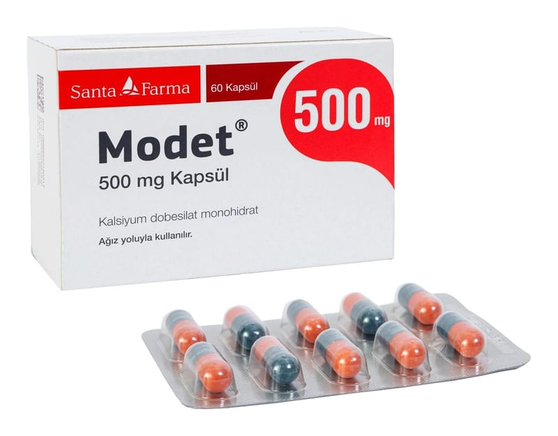

Modet 500 mg Kapsül, 60 Adet

Ne için kullanılır
KT · Bölüm 1Her bir kapsül etkin madde olarak kalsiyum dobesilat içerir.
MODET®, 30 veya 60 adet kapsül içeren blister ambalajda takdim edilmektedir.
Şeker hastalığına bağlı küçük damarlardaki dolaşım bozukluklarında (diabetik retinopati gibi), toplardamar bozukluklarına bağlı deri problemlerinde, bacaklarda ağrı, kramp ve tembellikle seyreden damar dolaşım bozukluklarında ve ayrıca hemoroidal bozukluklarda (makat ve anüs çevresinde bulunan toplardamarların bozukluk ve iltihabi durumunda) kullanılır. Ayrıca toplardamar iltihabına (flebit) bağlı gelişebilecek dolaşım bozukluklarında tedaviye yardımcı olarak kullanılır.
MODET®sığır kaynaklı jelatin içermektedir.